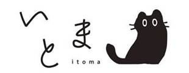

閑、暇、いとま 。 それは、居てもいい、居たくなる、心地いい。そんな空間･処。
Link
Twitter
Instagram
Note
Info
レトロ平屋の賃貸募集中（三浦半島/三浦市） Retro small house for rent (Miura Peninsula/Miura City)
Social Org.
ITOMA
関心 対話 理解 共生
すべての「ひと」が心地よく共生できる社会を地域から。
©2020-2026 ITOMA G.K.